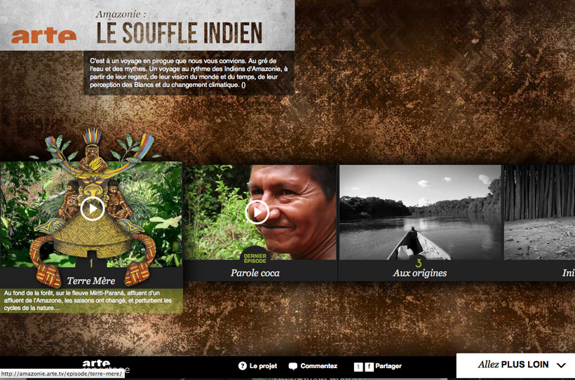
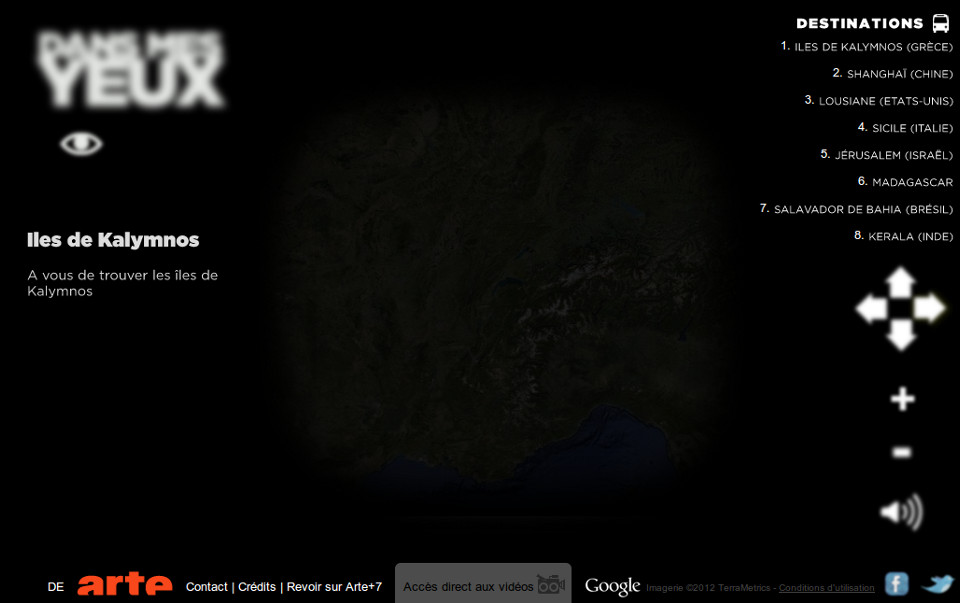

New York 3.0
Un webdocumentaire sur New York la moderne, 10 ans après les attentats du 11 septembre. 12 personnalités présentent leur ville à travers des vidéos, des photos, des articles et des cartes interactives. newyork.arte.tv

Un webdocumentaire sur New York la moderne, 10 ans après les attentats du 11 septembre. 12 personnalités présentent leur ville à travers des vidéos, des photos, des articles et des cartes interactives. newyork.arte.tv
Un webdocumentaire sur le réchauffement climatique vu par les indiens d'Amérique. Ciro, capitaine Matapi, nous raconte à travers 7 épisodes comment son peuple protège la forêt. amazonie.arte.tv
Une expérience interactive qui met l'internaute dans la peau d'un reporter aveugle. Il doit se laisser guider par les sons et les impressions pour découvrir sa destination. dans-tes-yeux.arte.tv
